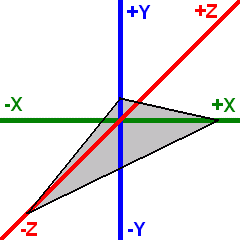

Scenes
A Scene contains all the objects to be rendered. It manages collections of renderables and light sources.
Renderables are objects that can be rendered by the engine, such as models, terrain, particle systems, or skyboxes.
Light sources illuminate renderables in the scene.
Cameras determines the perspective from which a scene is viewed. They define the position, orientation, and projection parameters.
A View represents a viewport with a specific scene and camera. The view handles rendering and can apply PostShaders to the final output. Multiple views can render the same scene with different cameras.
graph TD
Scene -- contains --> Renderables
Scene -- contains --> LightSources
View -- shows --> Scene
View -- uses --> Camera
Coordinate system
OmegaEngine uses a left-handed coordinate system (as used by DirectX) with the following default orientation:
- Positive X axis - Points to the right
- Positive Y axis - Points upward
- Positive Z axis - Points into the screen (away from the viewer)
The standard camera orientation is a view along the negative Z axis, looking into the positive Z direction.

Setup
Basic example of setting up a scene with a model and lighting:
var scene = new Scene
{
Positionables =
{
new Model(XMesh.Get(engine, "MyModel.x"))
},
Lights =
{
new DirectionalLight { Direction = new(-1, -1, 1), Diffuse = Color.White }
}
};
var camera = new FreeFlyCamera
{
Position = new(0, 10, -20)
};
var view = new View(scene, camera) { Lighting = true };
engine.Views.Add(view);
Render hierarchy
Positionables holds the roots of the scene. Every PositionableRenderable in turn has a Children collection, so renderables can be grouped under a shared transform.
A root's Position is absolute world space, a child's Position is an offset in its parent's coordinate system. WorldPosition always gives the absolute position.
scene.Positionables.Add(new Model(XMesh.Get(engine, "Spaceship.x"))
{
Position = new(0, 0, 100),
Children =
{
new Model(XMesh.Get(engine, "Engine.x")) { Position = new(0, 0, -5) }
}
});
Pivot is a renderable without geometry meant purely for grouping.
scene.Positionables.Add(new Pivot
{
Position = new(0, 0, 100),
Children =
{
new Model(XMesh.Get(engine, "Hull.x")),
new Model(XMesh.Get(engine, "Engine.x")) { Position = new(0, 0, -5) }
}
});
Adding a renderable to a collection removes it from its previous one and keeps its local Position, Rotation, Scale and PreTransform, i.e. its world position changes to match the new parent.
Rotation, scale and PreTransform are inherited in full, so non-uniform scaling on a parent combined with a rotated child produces shear.
Setting Visible = false on a renderable hides it together with its entire subtree.
PointLight and Sound3D can follow a renderable instead of holding an absolute position: set AttachedTo and give them a local Offset.
Camera-dependent effects
Some properties of PositionableRenderable adjust how a renderable is drawn based on its relation to the camera. They are evaluated per view, so a renderable shown by multiple views with different cameras is adjusted separately for each of them. They only affect rendering; the renderable's Position, Rotation and Scale stay unchanged.
Billboard
Billboard rotates a renderable to face the camera, which is useful for flat sprites such as sun flares, labels or impostors standing in for distant geometry. The BillboardMode controls how:
- Spherical: The renderable always faces the camera fully, regardless of the camera's elevation.
- Cylindrical: The renderable only rotates around its vertical axis, so it stays upright, e.g. for trees or characters.
This applies to leaf nodes only; it has no effect while a renderable has children.
Minimum screen size
MinScreenSizeDistance keeps distant renderables from shrinking to nothing on screen. While closer to the camera than this distance, a renderable is drawn at its natural size. Farther away, it is scaled up so that it never appears smaller than it would at this distance, i.e. its apparent size (angular diameter) stays constant.
This is useful for objects that should remain visible and selectable at any distance, such as markers or units on a strategic map.
This applies to leaf nodes only; it has no effect while a renderable has children. The scaling is applied on top of Scale.
Distance compression
Distance compression lets very distant objects, such as planets or moons, be shown in a scene without pushing the camera's FarClip out so far that depth buffer precision suffers. It is enabled by setting the scene's DistanceCompressionStart (null, the default, disables it). Renderables farther away than this distance are then pulled in closer to the camera and scaled down correspondingly, so their outline on screen is unchanged and only their depth differs. While enabled, renderables are not culled by FarClip.
Note
Distance compression serves a similar purpose as a logarithmic depth buffer (logarithmic Z-buffer): it lets a scene span vast distances without running out of depth buffer precision. However, instead of remapping depth values per vertex or pixel in shaders, it scales entire subtrees around the camera on the CPU. It therefore works with any shader and with hardware depth tests unchanged, but only orders renderables correctly as whole subtrees (see below).
This applies to each top-level renderable together with all its children, which are pulled in alike and stay in place relative to each other. It is measured to the surface of the subtree's bounding sphere, so no part of the subtree is rendered closer than DistanceCompressionStart, unless the subtree has to be pulled in further to keep its far side within FarClip.
Renderables beyond DistanceCompressionStart are pulled in logarithmically. A surface at distance x is rendered at d + r * (1 - exp(-d * ln(x / d) / r)), where d is DistanceCompressionStart and r the room left up to FarClip. This is close to d * (1 + ln(x / d)) while far short of FarClip, but approaches it instead of exceeding it.
This keeps pulled-in renderables at clearly different distances in the right Z-order. It is not guaranteed for renderables whose depth ranges overlap, since each subtree is scaled as a whole by a factor measured to its own nearest surface, nor for subtrees pulled in further to fit within FarClip. They are spread across the depth range between DistanceCompressionStart and FarClip, so leave enough room between the two.
Fog is applied at the distance a renderable is rendered at, not the one it actually has. Pulled-in renderables are therefore usually fogged less than their actual distance would call for.
Distance compression can be combined with MinScreenSizeDistance for very large, very distant objects that should also stay visible.